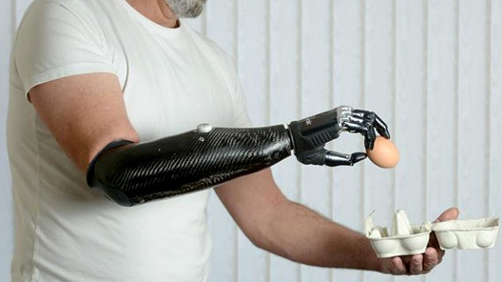
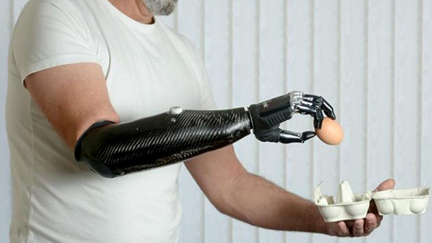

Você já se perguntou como a tecnologia pode mudar a nossa forma de viver? Já imaginou ter um corpo cibernético ou se conectar diretamente ao computador? Neste artigo, vamos explorar a evolução dos ciborgues e como eles estão se tornando cada vez mais presentes em nossa sociedade. Quais são as vantagens e desvantagens de se tornar um ciborgue? Como a robótica pode melhorar a qualidade de vida das pessoas? Descubra tudo isso e muito mais!
Nos próximos anos, é possível que vejamos avanços significativos na área dos ciborgues. Novas tecnologias podem permitir a criação de implantes ainda mais sofisticados, capazes de melhorar a qualidade de vida de muitas pessoas. No entanto, é importante estar atento aos desafios éticos e legais que essa evolução pode trazer consigo.
A robótica tem evoluído de forma exponencial nas últimas décadas, permitindo a criação de máquinas cada vez mais sofisticadas e autônomas. Essa evolução tem impactado diversos setores da sociedade, como a indústria, a medicina e a educação.
A ciborguização pode ser vista como uma tendência na sociedade moderna, já que cada vez mais pessoas estão aderindo aos implantes cibernéticos. No entanto, também é possível que se torne um futuro inevitável, à medida que a tecnologia continue evoluindo e oferecendo soluções cada vez mais avançadas.